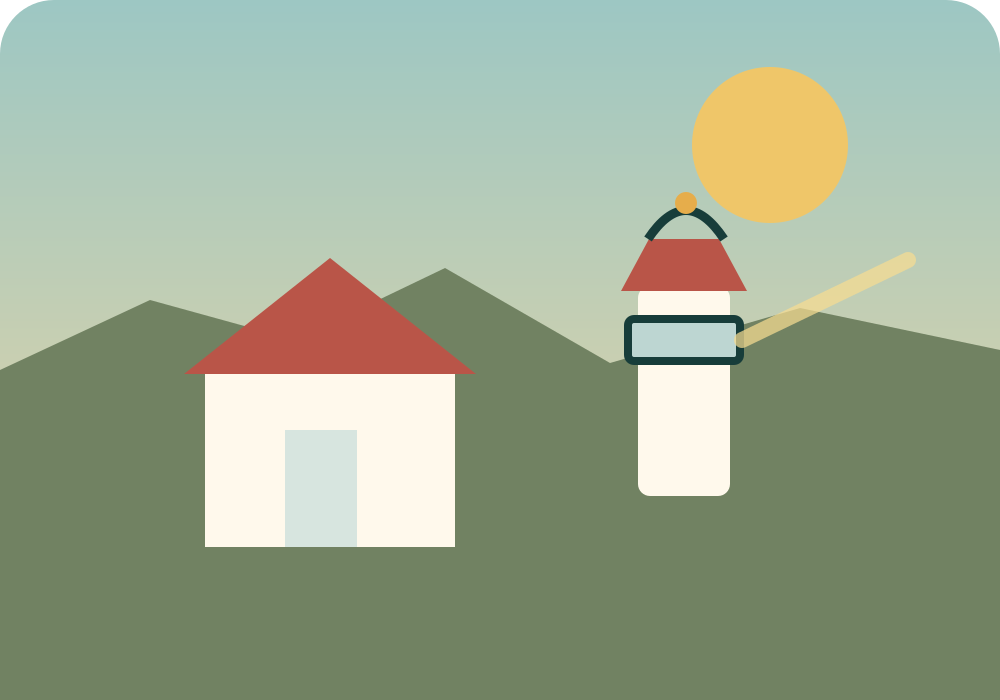

Point Reyes & Tomales Bay
Two versions of the day: a lighthouse-first classic for early starts, and a food-forward oysters + soft-serve route that works better when you leave late.
Practical itineraries for day trips across California—especially Northern California—with food worth the drive, scenery worth the detour, and source links for the details that can change.
The first guide grew out of a spontaneous Saturday drive from the East Bay to West Marin.

Two versions of the day: a lighthouse-first classic for early starts, and a food-forward oysters + soft-serve route that works better when you leave late.
Future pages can reuse the same shared design system while keeping each itinerary independent and easy to share.
Possible future structure: Sonoma · Mendocino · Santa Cruz · Monterey · Gold Country · Tahoe · Big Sur.